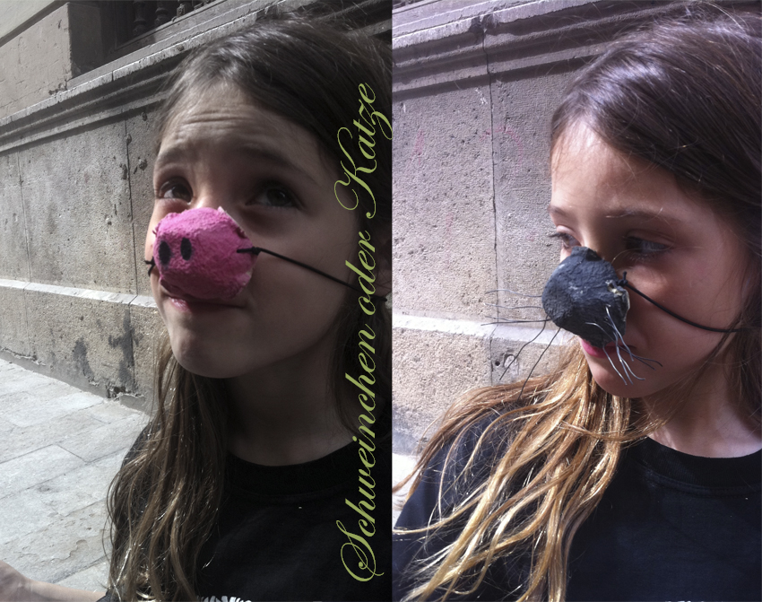

span style="color: #c27ba0; font-family: Georgia, 'Times New Roman', serif;">Schweinchen oder Katze: Nur mit einem Eierkarton kannst Du alle möglichen Tierverkleidungen machen. Hannah tauscht ihre Schweinchennase gegen eine Katzennase mit Drahthaaren.
Con cartón de huevera puedes fabricar el disfraz de tu animal preferido. Hannah ha decidido cambiar su nariz de cerdito por una de gato, utilizando alambre para los pelitos. Pig o cat: Only using cardboard´s egg- cups you can disguise yourself as diferent animals. Hannah changed her look from a pig to a cat using wire for the hair. <